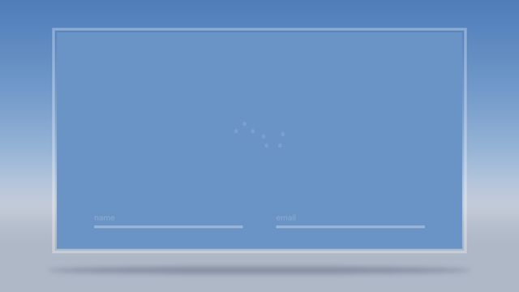
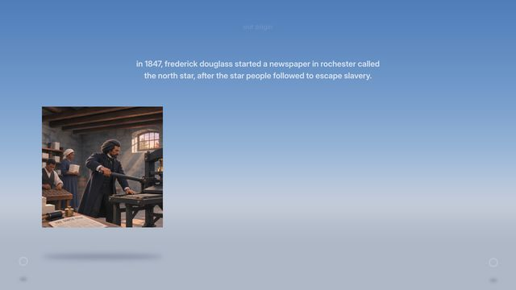

For testing. The sign-in and the opening play as animations; every board of the deck is below, by section. Click a board to view it full size, then use the arrow keys.

Typing in, loading, the line sweeping the panel away, and the title with its rings.

Slides 1, 1.1 and 1.2, each photo and statement brought in by its line.